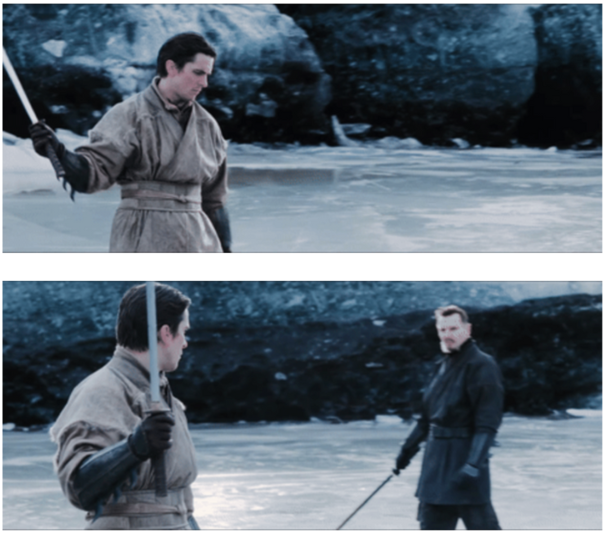

Vizzora
MCP AI agent that turns data into business insights.
MCP AI agent that turns data into business insights.

Research on video VLMs for camera and scene understanding.

Torch-like deep learning framework built to understand the mechanics underneath.

Open-source recommender-system work with performance optimization experience.

RGB and depth-image research for food understanding.